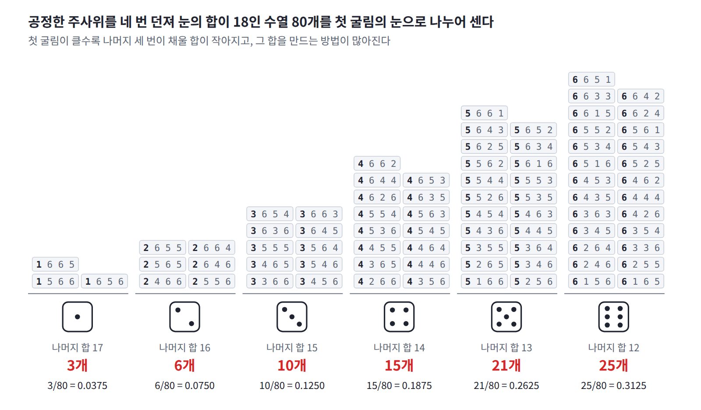
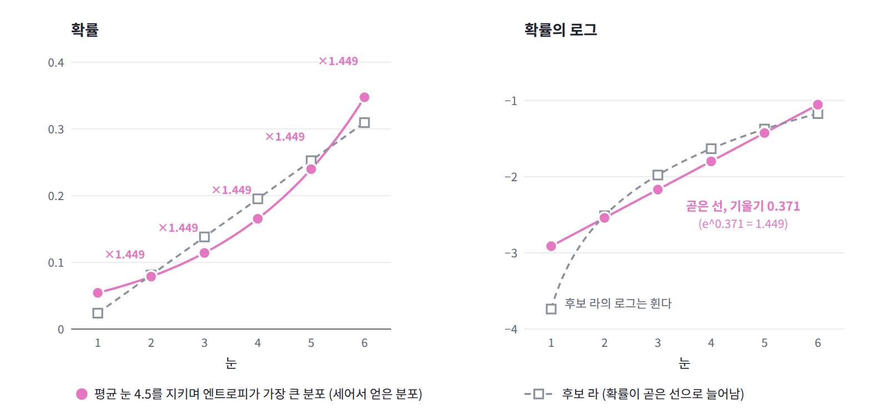
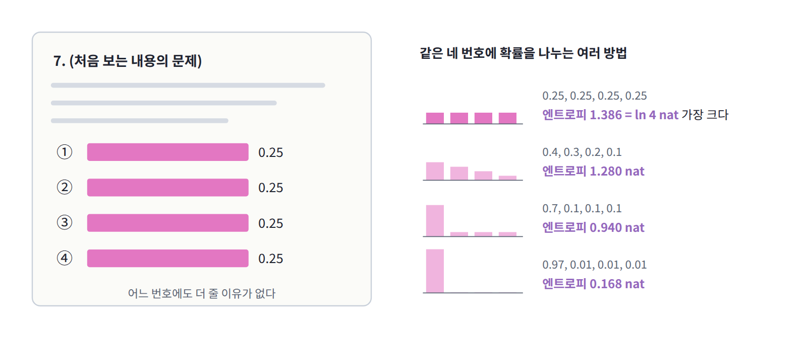
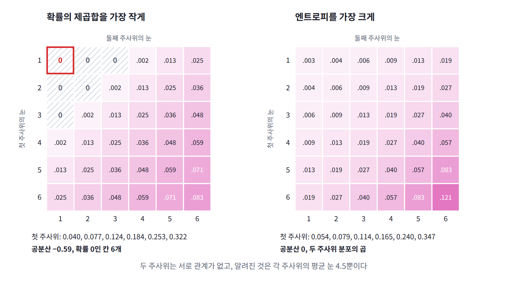

10장 — 최대 엔트로피 원리
이 장에서 배우는 것
클래스가 세 개인 로지스틱 회귀를 규제 항 없이 끝까지 학습시킨 뒤 두 가지를 세어 보자. 학습 데이터에 클래스별로 400개, 250개, 150개의 샘플이 있었다면, 모델이 샘플마다 내놓은 예측 확률을 클래스별로 모두 더한 값도 소수점 셋째 자리까지 400, 250, 150이다. 그리고 학습이 끝난 교차 엔트로피 손실은 모델이 샘플마다 내놓은 예측 분포의 엔트로피를 평균한 값과 넷째 자리까지 같다. 모델은 정답을 맞히려고 했을 뿐인데, 어째서 데이터에서 센 개수를 그대로 되풀이하고, 손실은 모델 자신의 불확실성과 같아질까?
같은 일은 더 단순한 모델에서도 일어난다. 실수 x 위의 에너지 기반 모델 E_θ(x) = θx²/2를 데이터 {−2, −1, 1, 2}에 최대우도로 맞추면 답은 θ = 0.4이고, 이것은 모델의 x² 평균을 데이터의 x² 평균 2.5에 맞춘 값이다. 데이터에서 모델로 넘어간 것은 이 평균 하나뿐이다. softmax도, 지수족도, 에너지 기반 모델도 모두 e^(−에너지)를 정규화한 모양인데, 곁에 열원이 없는 ML 모델이 왜 이 모양을 해야 하는지, 그리고 평균을 맞추려고 조정한 매개변수가 왜 역온도와 같은 자리에 서는지는 아직 설명하지 않았다.
이 장의 답은 다음과 같다. 몇 가지 평균만 알고 그 밖에는 아무것도 가정하고 싶지 않을 때, 그 평균을 지키는 분포 가운데 엔트로피가 가장 큰 것을 고르면 답은 반드시 지수 모양이 된다. 평균 하나를 지키게 하는 라그랑주 승수가 그 지수의 계수가 되고, 에너지의 평균을 지키게 하는 승수는 바로 역온도다. 또 이 선택은 같은 지수 모양의 모델을 최대우도로 맞추는 문제와 앞뒷면을 이루므로, 최대우도로 학습한 지수 모양 모델은 자신에게 주어진 평균을 데이터와 맞추고, 그 손실은 모델의 엔트로피와 같아진다.
이 장은 평균 눈이 4.5라는 것만 알려진 주사위의 수열을 직접 세어, 이웃한 눈의 확률 비가 일정하다는 패턴을 찾는 데서 출발한다. 이어 최대 엔트로피 원리와 라그랑주 승수를 정의하고, 지수족과 최대우도의 쌍대 관계, 기준 분포가 있을 때의 KL 최소화로 넓힌다. 이 장을 마치면 MSE와 MAE가 각각 어떤 평균만 믿는 선택인지, 가우시안으로 맞춘 모델이 데이터의 봉우리 개수와 상관없이 같은 손실을 내는 이유, SAC가 온도 α를 자동으로 조절하는 식이 무엇을 하는지, RLHF와 DPO에서 기준 정책과 β가 맡는 역할, 그리고 엔트로피 대신 다른 「고르게 퍼진 정도」를 쓰면 무엇이 잘못되는지를 설명할 수 있게 된다.
역사: 모르는 것은 모른다고 적는 법
정보가 부족할 때 확률을 어떻게 매길지는 확률론만큼 오래된 질문이다. 물리학자들은 열원과 맞닿은 계의 경우의 수를 세어 지수 모양의 분포를 얻었지만, 그 계산이 사실은 「주어진 평균만 지키고 나머지는 모른다고 적는」 추론 규칙이라는 것이 분명해진 것은 20세기 중반의 일이다. 그 규칙은 반세기 뒤 자연어 처리와 강화학습의 한가운데로 들어온다.
| 연도 | 사람 | 내용 |
|---|---|---|
| 19세기 초 | 라플라스 | 달리 생각할 이유가 없으면 모든 경우에 같은 확률을 준다(뒤에 이유 불충분 원리라 불림) |
| 1877 | 볼츠만 | 전체 에너지가 정해진 분자들의 배치를 세어, 가장 많은 배치를 만드는 에너지 분포가 지수 모양임을 보임 |
| 1902 | 깁스 | 『통계역학의 기본 원리』 11장에서 평균 에너지가 같은 분포 가운데 정준 분포가 확률 지표(확률의 로그)의 평균이 가장 작음, 곧 엔트로피가 가장 큼을 보임 |
| 1948 | 섀넌 | 엔트로피를 정보의 양으로 정의 |
| 1957 | 제인스 | 「정보 이론과 통계역학」. 통계역학의 계산 규칙이 최대 엔트로피 추론에서 바로 나옴을 보임 |
| 1959 | 쿨백 | 기준 분포가 있을 때는 그 분포에서 KL이 가장 작은 분포를 고르는 원리를 정리 |
| 1980 | 쇼어·존슨 | 일관된 추론이 지켜야 할 공리 네 개로부터 엔트로피(상대 엔트로피)만이 기준이 될 수 있음을 보임 |
| 1996 | 버거와 델라 피에트라 형제 | 최대 엔트로피 모델로 자연어 처리 문제를 풀고, 그것이 지수 모양 모델의 최대우도와 같음을 강조 |
| 2018 | 하르노야 외 | SAC. 보상과 정책 엔트로피를 함께 최대화하고, 온도를 엔트로피 제약의 쌍대 변수로 자동 조절 |
1957년 스탠퍼드의 물리학자 에드윈 제인스는 『피지컬 리뷰』에 낸 논문의 초록 첫머리에 이렇게 적었다. 「정보 이론은 부분적인 지식을 바탕으로 확률분포를 세우는 구성적인 기준을 주며, 최대 엔트로피 추정이라 불리는 통계적 추론으로 이어진다. 이것은 주어진 정보에서 가능한 가장 치우치지 않은 추정이다. 곧, 빠진 정보에 대해 최대한 아무것도 단정하지 않는다.」 그는 통계역학을 물리 이론이 아니라 추론의 한 예로 보자고 제안했다. 분배함수를 구하는 데서 시작하는 통상의 계산 규칙은 에르고드 가정 같은 물리적 가설 없이도, 평균 에너지만 알려져 있을 때 엔트로피를 최대로 하는 분포를 고르라는 요구에서 곧바로 나온다는 것이다.
제인스는 이 원리를 라플라스의 규칙을 넓힌 것으로 소개했다. 최대 엔트로피 분포는 「달리 생각할 이유가 없다」는 소극적인 이유가 아니라 빠진 정보에 대해 최대한 아무것도 단정하지 않는 유일한 분포라는 적극적인 이유로 내세울 수 있고, 「달리 생각할 이유」, 곧 알려진 평균이 있을 때 라플라스의 규칙을 어떻게 고쳐야 하는지도 정확히 알려 준다는 것이다.
제인스는 두 준위만 가진 원자가 빛과 에너지를 주고받는 제인스–커밍스 모형(1963)으로도 이름을 남긴 현역 물리학자였다. 1962년 브랜다이스 대학의 여름학교 강의에서 그는 이 장의 작은 문제가 될 질문을 던졌다. 주사위를 여러 번 던졌더니 평균 눈이 정직한 주사위의 3.5가 아니라 4.5였다고 할 때, 각 눈의 확률을 어떻게 매겨야 하는가? 이후 「브랜다이스 주사위 문제」라 불리게 된 이 질문에 그가 내놓은 답은 0.054, 0.079, 0.114, 0.165, 0.240, 0.347이었다.
작은 문제: 평균 눈이 4.5인 주사위
친구가 주사위를 수천 번 던지고 나서 기록은 잃어버렸고 평균 눈이 4.5였다는 것만 기억한다고 하자. 정직한 주사위라면 평균이 3.5여야 하니 큰 눈 쪽으로 치우친 주사위임은 분명하다. 다음 한 번을 던질 때 각 눈이 나올 확률을 어떻게 적어야 할까? 평균 4.5를 지키는 분포는 얼마든지 있다. 몇 가지 후보를 적고, 각 후보가 얼마나 고르게 퍼져 있는지를 엔트로피(nat)로 재어 보자.
| 후보 | 1 | 2 | 3 | 4 | 5 | 6 | 엔트로피 |
|---|---|---|---|---|---|---|---|
| 가. 4와 5만 반반 | 0 | 0 | 0 | 0.5 | 0.5 | 0 | 0.693 |
| 나. 3과 6만 반반 | 0 | 0 | 0.5 | 0 | 0 | 0.5 | 0.693 |
| 다. 3~6을 고르게 | 0 | 0 | 0.25 | 0.25 | 0.25 | 0.25 | 1.386 |
| 라. 곧은 선으로 늘어나게 | 0.024 | 0.081 | 0.138 | 0.195 | 0.252 | 0.310 | 1.595 |
넷 모두 평균은 정확히 4.5다. 그런데 가와 나는 친구가 말하지 않은 것을 단정한다. 1, 2, 3, 6이 한 번도 나오지 않았다는 말은 들은 적이 없는데 확률을 0으로 적었기 때문이다. 다도 1과 2를 지웠다. 라는 모든 눈을 살려 두었지만, 확률이 눈에 대해 곧은 선으로 늘어난다는 가정은 어디서 왔는지 알 수 없다. 어느 후보도 평균 말고는 아무것도 가정하지 않았다고 말하기 어렵다.
그래서 이번에는 짐작하지 말고 세어 보자. 주사위를 N번 던져 나올 수 있는 눈의 수열은 6^N가지이고, 평균 말고는 아무것도 모르므로 이 수열들 사이에 차별을 두지 않는다. 그중 평균이 정확히 4.5인 수열, 곧 눈의 합이 4.5N인 수열만 남기고, 남은 수열 가운데 첫 굴림이 1, 2, …, 6인 것이 각각 몇 개인지 센다. N = 2이면 합이 9인 수열은 (3, 6), (4, 5), (5, 4), (6, 3) 네 개뿐이므로 첫 굴림은 3~6이 4분의 1씩이고, 후보 다와 같다. N = 4이면 합이 18인 수열은 80개이고, 첫 굴림이 1~6인 것은 차례로 3, 6, 10, 15, 21, 25개다. 굴림 수를 늘려 가며 같은 비율을 계산하면 다음과 같다.
| N | 1 | 2 | 3 | 4 | 5 | 6 | 엔트로피 |
|---|---|---|---|---|---|---|---|
| 4 | 0.0375 | 0.0750 | 0.1250 | 0.1875 | 0.2625 | 0.3125 | 1.6058 |
| 10 | 0.0473 | 0.0770 | 0.1191 | 0.1755 | 0.2473 | 0.3338 | 1.6123 |
| 100 | 0.0537 | 0.0786 | 0.1146 | 0.1664 | 0.2405 | 0.3462 | 1.6136 |
| 1000 | 0.0543 | 0.0788 | 0.1142 | 0.1655 | 0.2398 | 0.3474 | 1.6136 |

N = 1000이면 평균이 정확히 4.5인 수열만 해도 10⁶⁹⁸개가 넘지만, 첫 굴림의 비율은 넷째 자리에서만 조금씩 움직일 뿐 한 분포에 자리를 잡는다. 이 분포의 엔트로피 1.6136은 네 후보 어느 것보다 크고, 후보 라의 1.595보다도 크다. 세어서 얻은 분포는 어떤 모양일까? 그리고 엔트로피가 가장 크다는 것은 우연일까?
패턴: 이웃한 눈의 확률 비가 일정하다
세어서 얻은 비율에서 이웃한 두 눈의 확률 비, 곧 (눈 2의 확률)/(눈 1의 확률), (눈 3의 확률)/(눈 2의 확률), …을 차례로 계산해 보자.
| N | 2/1 | 3/2 | 4/3 | 5/4 | 6/5 |
|---|---|---|---|---|---|
| 10 | 1.628 | 1.547 | 1.474 | 1.409 | 1.350 |
| 100 | 1.465 | 1.458 | 1.452 | 1.445 | 1.439 |
| 1000 | 1.451 | 1.450 | 1.450 | 1.449 | 1.448 |
굴림 수가 늘어날수록 다섯 개의 비가 한 값 1.449로 모인다. 눈이 하나 커질 때마다 확률이 같은 배수로 늘어난다는 뜻이므로, 확률은 눈의 지수함수이고 그 로그는 눈에 대해 곧은 선이다. 1.449 = e^0.371이므로 한 번의 굴림에서 눈 k가 나올 확률은 e^(0.371k)에 비례하고, 여섯 값의 합이 1이 되도록 나누면 (0.0544, 0.0788, 0.1142, 0.1654, 0.2398, 0.3475)를 얻는다. 곧은 선으로 늘어나는 것은 확률 자체가 아니라 확률의 로그였다. 후보 라는 곧은 선을 잘못된 곳에 그은 셈이다.

왜 지수함수가 나오는지는 센 방법을 다시 보면 알 수 있다. 첫 굴림이 f이면 나머지 N − 1번의 굴림이 합 4.5N − f를 채워야 하므로, 첫 굴림이 f인 수열의 수는 나머지 굴림이 그 합을 만드는 방법의 수와 같다. 나머지 굴림이 아주 많으면 첫 굴림의 눈이 1 늘 때 나머지가 채울 몫은 1 줄고, 그 방법의 수의 로그는 몫이 1 줄 때마다 거의 같은 양씩 줄어든다. 로그가 같은 양씩 줄면 방법의 수는 같은 비율로 줄고, 그 비율이 이웃한 눈의 확률 비로 나타난다. N = 10에서 비가 흔들린 것은 나머지가 아홉 번뿐이라 첫 굴림 하나가 나머지의 몫을 눈에 띄게 바꾸었기 때문이다. 열원과 맞닿은 작은 계에서 볼츠만 인자가 나오는 것과 같은 계산이고, 여기서는 나머지 굴림들이 열원 노릇을 한다.
엔트로피가 가장 크다는 것도 세어서 설명할 수 있다. N번의 굴림에서 눈 1~6이 각각 n₁, …, n₆번 나오는 수열의 수는 N!/(n₁!⋯n₆!)이고, 굴림 수가 크면 이 수의 로그는 N × (비율 nₖ/N의 엔트로피)에 가깝다. 따라서 평균이 4.5인 여러 눈 개수 조합 가운데 가장 많은 수열이 몰리는 조합은 엔트로피가 가장 큰 조합이다. N = 1000에서 지수 모양의 조합 (55, 78, 114, 166, 239, 348)과 곧은 선 모양의 조합 (24, 81, 138, 195, 252, 310)은 둘 다 눈의 합이 4500이지만, 앞의 조합을 만드는 수열이 뒤의 조합보다 약 5.06 × 10⁷배 많다. 엔트로피 차이 0.018 nat에 굴림 수 1000을 곱한 약 18이 지수에 올라간 셈이다(정확히 세면 ln(5.06 × 10⁷) = 17.7). 굴림 수가 늘수록 엔트로피가 가장 큰 조합 말고는 비교가 안 될 만큼 드물어진다.
정의: 최대 엔트로피 원리와 라그랑주 승수
사지선다 시험에서 전혀 모르는 문제를 만나면 우리는 네 번호에 4분의 1씩 확률을 준다. 이것이 라플라스의 규칙이고, 아무 제약이 없을 때 엔트로피가 가장 큰 분포가 균등 분포이므로 엔트로피를 최대로 하라는 말로 바꿔 적을 수 있다. 주사위 문제는 여기에 「평균 눈은 4.5」라는 정보 하나가 더해진 경우였고, 세어서 얻은 답은 그 평균을 지키는 분포 가운데 엔트로피가 가장 큰 분포였다. 이것을 원리로 적은 것이 최대 엔트로피 원리 (알려진 평균만 지키고 나머지는 가장 고르게, principle of maximum entropy)다. 알려진 평균들을 모두 지키는 분포 가운데 엔트로피가 가장 큰 것을 고르라는 것이다. 엔트로피가 더 작은 분포를 고르면, 그만큼 주어지지 않은 정보를 가정한 셈이 된다.

평균 에너지 하나가 알려진 경우를 풀어 보자. 상태 i의 에너지가 Eᵢ이고 평균 에너지가 Ē로 알려져 있다. 제약이 걸린 최대화는 라그랑주 승수 (제약을 지키게 하려고 붙이는 계수, Lagrange multiplier)로 푼다. 제약마다 승수를 하나씩 두고, 목적 함수에서 (승수 × 제약이 어긋난 양)을 빼서 H(p) − λ₀(Σᵢpᵢ − 1) − β(ΣᵢpᵢEᵢ − Ē)를 만든 뒤, 이것을 pᵢ로 미분해 0으로 놓는다. 엔트로피를 미분하면 −ln pᵢ − 1이 나오므로 −ln pᵢ − 1 − λ₀ − βEᵢ = 0, 곧 확률의 로그가 에너지의 일차식이 된다. 정규화 제약의 승수 λ₀는 확률의 합을 1로 맞추는 상수로 흡수되어 1/Z가 된다.
열원도 경우의 수도 말하지 않았는데 볼츠만 분포가 나왔다. 평균 에너지만 알 때 가장 치우치지 않은 분포가 곧 볼츠만 분포인 것이다. 승수 β의 값은 이 분포가 실제로 평균 Ē를 내도록 정한다. 볼츠만 분포의 평균 에너지는 ln Z를 β로 미분한 값에 마이너스를 붙인 것이고, 그 평균을 β로 한 번 더 미분하면 에너지 분산에 마이너스를 붙인 값이 된다. 분산은 양수이므로 평균 에너지는 β에 대해 한 방향으로만 움직이고, 그래서 도달할 수 있는 평균마다 승수가 꼭 하나씩 정해진다. 분산이 곧 기울기이니 뉴턴 방법으로 찾기도 쉽다. 주사위의 눈을 에너지로 보면 β = 0(평균 3.5)에서 시작해 −0.343, −0.3706, −0.3710으로 세 걸음 만에 자리를 잡는다.
이제 이 장 첫머리의 질문, 곧 평균을 맞추려고 조정한 매개변수가 왜 역온도 자리에 서는지에 답할 수 있다. 위의 해를 엔트로피 식에 다시 넣으면 도달할 수 있는 가장 큰 엔트로피를 평균 에너지의 함수로 얻고, 그것을 평균 에너지로 미분하면 승수가 나온다.
셋째 식을 얻으려면 첫 식을 Ē로 미분하되 β도 Ē에 따라 움직인다는 것을 챙기면 된다. β가 움직여서 생기는 항은 Ē + ∂ln Z/∂β에 비례하는데, 둘째 식 때문에 이것이 0이라 β만 남는다. 라그랑주 승수는 일반적으로 「제약의 값을 조금 늦췄을 때 최적값이 늘어나는 비율」이라는 뜻을 갖는데, 여기서는 평균 에너지를 조금 올렸을 때 도달할 수 있는 엔트로피가 늘어나는 비율이다. 그리고 역온도는 경우의 수의 로그가 에너지에 따라 늘어나는 비율 ∂ln W/∂E로 정의되는 양이다. 굴림이 N번이면 평균을 지키는 수열의 수가 대략 e^(N·H_max)이므로 둘은 같은 비율이다. 승수가 역온도 자리에 서는 것은 우연이 아니라 정의상 같은 양이기 때문이다.
주사위에서 이 비율을 직접 확인할 수 있다. 평균 눈을 4.4, 4.5, 4.6으로 두면 가장 큰 엔트로피는 1.6486, 1.6136, 1.5743이고, 양옆의 차이를 0.2로 나눈 −0.371은 승수 β = −0.3710과 같다. 승수가 음수인 것은 평균을 균등 분포의 평균 3.5보다 높은 곳에 고정했기 때문인데, 그 영역에서는 평균을 더 올릴수록 엔트로피가 줄어든다. 에너지로 말하면 높은 에너지 쪽이 더 많이 채워진 음의 온도이고, 눈이 6에서 막혀 있는 주사위처럼 에너지 준위에 위쪽 끝이 있는 계에서만 가능한 일이다.
일반화: 평균 여러 개와 지수족
알려진 평균이 여러 개여도 계산은 같다. 상태 x의 함수 φ₁(x), φ₂(x), …의 평균이 각각 φ̄₁, φ̄₂, …로 알려져 있으면, 제약마다 승수 θₐ를 하나씩 붙여 같은 미분을 하면 된다. 확률의 로그가 φₐ들의 일차식이 되어 다음 모양의 분포를 얻는다.
이런 분포들의 모임을 지수족 (평균 몇 개로 정해지는 최대 엔트로피 분포의 모임, exponential family)이라 하고, 평균을 아는 함수 φₐ를 충분통계량 (모델이 데이터에서 넘겨받는 평균들, sufficient statistic)이라 부른다. 에너지를 E = −Σθₐφₐ로 쓰면 볼츠만 분포와 같은 모양이므로, 특징 φₐ는 에너지 자리에 서는 양이고 승수 θₐ는 그 특징에 붙은 역온도다. 어떤 평균을 아느냐에 따라 익숙한 분포들이 모두 이 모양으로 나온다.
| 상태 | 알려진 평균 | 최대 엔트로피 분포 | ML에서 만나는 모습 |
|---|---|---|---|
| 유한 개 | 없음 | 균등 분포 | 학습 전의 균등 예측 |
| 유한 개 | ⟨E⟩ | 볼츠만 분포 | softmax (E = −로짓) |
| 0 또는 1 | ⟨s⟩ | 베르누이 분포, 확률 = sigmoid(θ) | 이진 분류 |
| 실수 | ⟨x²⟩ | 평균 0인 정규분포 | E_θ = θx²/2, MSE 손실 |
| 실수 | ⟨x⟩, ⟨x²⟩ | 정규분포 | 가우시안 출력층 |
| 실수 | ⟨∣x∣⟩ | 라플라스 분포 | MAE (L1) 손실 |
| 0 이상 실수 | ⟨x⟩ | 지수분포 | 사건 사이의 대기 시간 |
실수 전체에서 아무 평균도 모르면 최대 엔트로피 분포가 없다. 무한히 넓은 곳에 고르게 퍼진 분포는 정규화할 수 없으므로 퍼진 정도를 알려 주는 평균이 적어도 하나 있어야 하고, E_θ = θx²/2도 θ가 0 이하이면 정규화할 수 없다.
이제 데이터 {−2, −1, 1, 2}에 E_θ = θx²/2를 맞춘 결과를 다시 읽을 수 있다. 이 모델은 에너지가 x²/2 하나에 비례하는 지수족이므로, 최대우도로 맞추는 것은 「x²의 평균이 2.5라는 것만 알 때의 최대 엔트로피 분포」를 고르는 것과 같고, 답은 분산 2.5인 정규분포, 승수는 θ = 1/2.5 = 0.4다. 데이터에 봉우리가 몇 개인지, 꼬리가 얼마나 두꺼운지가 모델에 들어가지 않은 것은 결함이 아니라 설계다. 특징으로 x² 하나만 골랐으니 그 평균 말고는 아무것도 단정하지 않도록 만들어진 것이다. 특징을 고르는 일이 곧 무엇을 믿을지 고르는 일이다.
최대우도와의 관계를 식으로 확인해 보자. 지수족 모델에서 데이터의 평균 로그우도는 Σθₐ⟨φₐ⟩_데이터 − ln Z(θ)이고, θₐ로 미분하면 ⟨φₐ⟩_데이터 − ⟨φₐ⟩_모델이 나온다. 기울기가 0인 곳은 모델의 평균이 데이터의 평균과 같아지는 곳, 곧 데이터의 평균을 제약으로 삼은 최대 엔트로피 분포다. 둘 사이에는 더 강한 관계도 있다. ln p_θ(x)가 특징들의 일차식이므로, 평균 φ̄를 지키는 분포라면 무엇이든 p_θ로 잰 교차 엔트로피가 φ̄만으로 정해진다.
부등호는 교차 엔트로피가 엔트로피보다 작을 수 없다는 사실이고, 등호는 p = p_θ일 때 성립한다. 그래서 대괄호를 θ에 대해 가장 작게 만드는 문제, 곧 데이터의 음의 로그우도를 줄이는 최대우도와, 평균을 지키는 p 가운데 엔트로피를 가장 크게 만드는 최대 엔트로피가 같은 값 H_max에서 만난다. 학습이 끝난 지수족 모델의 교차 엔트로피 손실이 모델 자신의 엔트로피와 같아지는 것이 바로 이 등호다. 둘째 식은 ln Z와 엔트로피를 잇는 르장드르 변환이기도 하다. 대괄호를 θ로 두 번 미분하면 특징의 공분산이 나오므로 대괄호는 볼록하고, 특징끼리 겹치지만 않으면 승수가 하나로 정해진다.

마지막으로 기준이 되는 분포 q가 따로 있는 경우다. 주사위가 원래부터 조금 찌그러져 있어 한 번 던질 때 눈의 확률이 q라는 것을 알고, 그 위에 평균 정보가 더해졌다고 하자. 이때는 수열마다 확률이 다르므로 같은 방식으로 세면 q에 지수 인자가 곱해진 분포가 나오고, 이것은 평균을 지키면서 q로부터의 KL을 가장 작게 하는 분포와 같다.
기준 분포가 균등하면 KL을 줄이는 것은 엔트로피를 늘리는 것과 같으므로 이것은 최대 엔트로피 원리를 넓힌 것이고, 쿨백의 이름을 따 최소 상대 엔트로피 원리라 부른다. 기준 분포는 볼츠만 분포를 에너지 값별로 적을 때 곱해지는 상태의 수 g(E)와 같은 자리에 선다. 연속 변수의 엔트로피 −∫ρ ln ρ dx는 x의 단위만 바꿔도 달라지므로 엄밀하게는 이 형태가 기본이고, 앞의 연속 분포들은 기준 밀도를 평평하게 잡은 경우다.
보기: 코드
세어서 얻은 분포와 최대 엔트로피 분포
작은 문제의 표를 코드로 다시 만들어 보자. 앞부분은 공정한 주사위 N번의 합이 4.5N인 수열만 남기고 첫 굴림의 눈 분포를 정확한 정수 계산으로 센다. 뒷부분은 평균 눈이 4.5인 최대 엔트로피 분포 p ∝ e^(θ·눈)의 승수를 뉴턴 방법으로 찾는데, 평균을 θ로 미분한 값이 분산이라는 것을 그대로 걸음 크기에 쓴다. 눈에 붙은 승수 θ는 눈을 에너지로 볼 때의 β에 마이너스를 붙인 것이다.
import numpy as np
faces = np.arange(1, 7)
def first_roll_given_mean(N, mean=4.5):
"""공정한 주사위 N번의 합이 mean × N인 수열만 남겼을 때, 첫 굴림의 눈 분포 (정확히 셈)"""
S = round(mean * N)
ways = {0: 1} # ways[s] = 굴림 N − 1번으로 합 s를 만드는 수열 수
for _ in range(N - 1):
new = {}
for s, c in ways.items():
for f in faces:
new[s + f] = new.get(s + f, 0) + c
ways = new
counts = [ways.get(S - f, 0) for f in faces] # 첫 눈이 f이면 나머지가 S − f를 채워야 한다
total = sum(counts)
return np.array([c / total for c in counts])
def maxent(mean):
"""평균 눈이 mean인 최대 엔트로피 분포 p ∝ e^(θ·눈). 뉴턴 방법: 평균의 θ 미분 = 분산"""
theta = 0.0
for it in range(5):
p = np.exp(theta * faces); p /= p.sum()
m, v = p @ faces, p @ faces ** 2 - (p @ faces) ** 2
print(f" 뉴턴 {it}: θ = {theta:.6f}, 평균 = {m:.6f}, 분산 = {v:.4f}")
theta += (mean - m) / v
p = np.exp(theta * faces); p /= p.sum()
return theta, p
H = lambda p: -(p[p > 0] * np.log(p[p > 0])).sum()
theta, p = maxent(4.5)
for N in (2, 4, 10, 100, 1000):
q = first_roll_given_mean(N)
print(f"N = {N:4d}:", np.round(q, 4), f" H = {H(q):.4f}")
print("최대 엔트로피:", np.round(p, 4), f" H = {H(p):.4f}, θ = {theta:.4f}")
print("이웃 확률의 비:", np.round(p[1:] / p[:-1], 4), " e^θ =", round(np.exp(theta), 4))
# 뉴턴 0: θ = 0.000000, 평균 = 3.500000, 분산 = 2.9167
# 뉴턴 1: θ = 0.342857, 평균 = 4.434121, 분산 = 2.3751
# 뉴턴 2: θ = 0.370594, 평균 = 4.498955, 분산 = 2.2994
# 뉴턴 3: θ = 0.371049, 평균 = 4.500000, 분산 = 2.2982
# 뉴턴 4: θ = 0.371049, 평균 = 4.500000, 분산 = 2.2982
# N = 2: [0. 0. 0.25 0.25 0.25 0.25] H = 1.3863
# N = 4: [0.0375 0.075 0.125 0.1875 0.2625 0.3125] H = 1.6058
# N = 10: [0.0473 0.077 0.1191 0.1755 0.2473 0.3338] H = 1.6123
# N = 100: [0.0537 0.0786 0.1146 0.1664 0.2405 0.3462] H = 1.6136
# N = 1000: [0.0543 0.0788 0.1142 0.1655 0.2398 0.3474] H = 1.6136
# 최대 엔트로피: [0.0544 0.0788 0.1142 0.1654 0.2398 0.3475] H = 1.6136, θ = 0.3710
# 이웃 확률의 비: [1.4493 1.4493 1.4493 1.4493 1.4493] e^θ = 1.4493
뉴턴 방법은 평균 3.5에서 출발해 세 걸음 만에 승수 0.3710을 찾고, 굴림 1000번에서 센 분포는 이 최대 엔트로피 분포와 넷째 자리에서 한 칸 이내로 맞는다. 이웃 확률의 비는 다섯 개 모두 e^θ = 1.4493이다. 경우의 수를 세는 쪽은 굴림 수가 늘어날수록 계산이 무거워지지만, 승수를 찾는 쪽은 평균과 분산만 있으면 된다.
최대우도는 평균을 맞춘다
이번에는 클래스 세 개의 로지스틱 회귀를 규제 없이 끝까지 학습한다. 특징은 입력 x, 그 제곱 x², 그리고 절편이고, 클래스마다 가중치 한 벌을 둔다. 학습이 끝난 뒤 특징과 원-핫 라벨을 곱해 더한 값이 데이터와 모델에서 같은지, 손실이 모델 예측 분포의 엔트로피 평균과 같은지, 그리고 특징에 넣지 않은 양도 맞춰지는지 확인한다.
import torch
import torch.nn.functional as Fn
torch.manual_seed(0)
# 클래스 3개, 입력 2차원. 클래스마다 중심이 다른 가우시안에서 400, 250, 150개 (서로 겹치게)
sizes = [400, 250, 150]
centers = torch.tensor([[0.0, 0.0], [1.5, 0.5], [0.5, 1.5]], dtype=torch.float64)
x = torch.cat([centers[k] + torch.randn(m, 2, dtype=torch.float64) for k, m in enumerate(sizes)])
y = torch.cat([torch.full((m,), k) for k, m in enumerate(sizes)])
X = torch.cat([x, x ** 2, torch.ones(len(x), 1, dtype=torch.float64)], 1) # 특징: x, x², 절편
Y = Fn.one_hot(y, 3).double()
W = torch.zeros(X.shape[1], 3, dtype=torch.float64, requires_grad=True) # 가중치 = 라그랑주 승수
opt = torch.optim.LBFGS([W], max_iter=1000, tolerance_grad=1e-14, tolerance_change=1e-16,
line_search_fn="strong_wolfe")
def closure():
opt.zero_grad()
loss = Fn.cross_entropy(X @ W, y)
loss.backward()
return loss
opt.step(closure)
with torch.no_grad():
P = torch.softmax(X @ W, 1)
print("클래스별 개수 데이터:", Y.sum(0).tolist(), " 모델:", [round(v, 3) for v in P.sum(0).tolist()])
print(f"특징 × 원-핫 합의 최대 차이 (데이터 − 모델): {(X.T @ (Y - P)).abs().max():.1e}")
print(f"학습 손실 (교차 엔트로피) : {Fn.cross_entropy(X @ W, y):.4f}")
print(f"모델 예측 분포의 엔트로피 평균: {-(P * P.log()).sum(1).mean():.4f}")
m = x[:, 0] * x[:, 1] > 1 # 특징에 넣지 않은 양: x₁x₂ > 1인 샘플
print("x₁x₂ > 1인 샘플의 클래스별 개수 데이터:", Y[m].sum(0).tolist(),
" 모델:", [round(v, 1) for v in P[m].sum(0).tolist()])
# 클래스별 개수 데이터: [400.0, 250.0, 150.0] 모델: [400.0, 250.0, 150.0]
# 특징 × 원-핫 합의 최대 차이 (데이터 − 모델): 4.2e-06
# 학습 손실 (교차 엔트로피) : 0.6951
# 모델 예측 분포의 엔트로피 평균: 0.6951
# x₁x₂ > 1인 샘플의 클래스별 개수 데이터: [48.0, 95.0, 53.0] 모델: [44.8, 96.8, 54.3]
절편은 모든 샘플에서 1인 특징이므로, 그 평균을 맞추면 클래스별 예측 확률의 합이 클래스별 개수와 같아진다. 다른 특징들에 대해서도 데이터와 모델의 차이가 10⁻⁶ 수준으로 사라졌고, 학습 손실 0.6951은 모델 예측 분포의 엔트로피 평균과 같다. 반면 특징에 넣지 않은 x₁x₂ > 1이라는 영역에서는 클래스별 개수가 48, 95, 53인데 모델은 44.8, 96.8, 54.3을 내놓는다. 모델은 넘겨받은 평균만 지키고, 넘겨받지 않은 것에 대해서는 아무것도 단정하지 않는다.
ML에서 만나는 곳
ML에서 최대 엔트로피 원리는 출력층이 지수 모양인 모델로, 그리고 정책의 엔트로피를 크게 두거나 기준 정책에 묶는 강화학습의 목적 함수로 나타난다. 어느 쪽이든 라그랑주 승수가 가중치나 온도나 KL 계수라는 이름으로 등장한다.
flowchart LR A["평균 에너지 ⟨E⟩를 지킴"] --> A2["승수 β = 역온도<br/>볼츠만 분포, softmax"] B["특징 × 라벨의 평균을 지킴"] --> B2["승수 θ = 가중치<br/>로지스틱 회귀"] C["정책 엔트로피 ≥ H̄를 지킴"] --> C2["승수 α = 온도<br/>SAC"] D["보상 평균을 지키며<br/>π_ref에서 KL 최소"] --> D2["승수 1/β, β = KL 계수<br/>RLHF, DPO"]
로지스틱 회귀는 최대 엔트로피 모델이다 (움직이는 것: 매개변수)
1990년대 IBM의 기계 번역 연구진은 영어 in이 문맥에 따라 프랑스어 dans, en, à 등으로 옮겨지는 확률을, 「이런 문맥에서 dans가 쓰이는 비율」 같은 평균만 지키는 최대 엔트로피 분포로 모델링했다. 버거와 델라 피에트라 형제(1996)는 그 결과가 제약마다 조절할 매개변수가 하나씩 있는 지수 모양의 모델이며, 그 매개변수는 학습 데이터의 우도를 최대화해서 얻는다는 것을 보이고 이렇게 정리했다. 「그러므로 최대 엔트로피와 최대우도라는 서로 다른 두 철학적 접근이 같은 결과를 낸다. 제약을 지키는 모델 가운데 엔트로피가 가장 큰 모델은 표본 데이터를 가장 잘 예측하는 지수 모델과 같다.」
이 장을 마친 독자는 이 문장을 「softmax 분류기의 가중치는 특징 × 라벨 평균마다 붙은 라그랑주 승수이고, 교차 엔트로피로 학습하는 것은 그 평균들을 데이터와 맞추는 최대 엔트로피 문제를 쌍대 쪽에서 푸는 것」으로 읽게 된다. 코드에서 본 것처럼 학습이 끝나면 클래스별 예측 확률의 합이 클래스별 개수와 같고, 손실은 모델의 예측 엔트로피와 같다. 신경망 분류기에서도 앞 층이 만든 표현이 특징, 마지막 선형층의 가중치가 승수이므로, 마지막 층이 수렴하면 그 표현의 평균이 데이터와 맞춰진다.
엔트로피를 최대화하는 정책 (움직이는 것: 정책과 온도)
SAC(Haarnoja 외 2018)는 매 상태에서 보상과 함께 정책의 엔트로피를 α배 해서 더한 합을 최대화한다. 상태 하나만 떼어 보면, 행동 가치가 Q(s, a)인 상태에서 ⟨Q⟩_π + αH(π)를 가장 크게 하는 정책을 찾는 문제다. 에너지를 −Q, 온도를 α로 두면 이것은 자유에너지를 가장 작게 하는 문제와 같고, 답은 볼츠만 분포이며 최댓값은 logsumexp다.
soft 가치 (온도를 넣어 부드럽게 만든 가치, soft value)라 불리는 V(s)는 에너지 −Q, 온도 α인 계의 자유에너지에 마이너스를 붙인 것이다. α → 0이면 logsumexp가 max로 줄어들어 보통의 가치 max_a Q(s, a)가 되고, 온도가 있으면 똑같이 좋은 행동이 k개일 때 가치가 α ln k만큼 더 붙는다.
α를 사람이 정하는 대신, SAC의 후속 논문 「Soft Actor-Critic Algorithms and Applications」(Haarnoja 외 2018)는 문제를 거꾸로 세웠다. 평균 엔트로피가 목표값 H̄ 이상이어야 한다는 제약 아래 보상을 최대화하고, 그 제약의 라그랑주 승수를 α로 삼는 것이다. 논문은 α를 「온도의 역할을 하는 쌍대 변수」라고 부르고, J(α) = ⟨−α ln π − αH̄⟩로 경사하강한다. 기울기가 (정책의 엔트로피 − H̄)이므로 엔트로피가 목표보다 낮으면 α가 오르고, 높으면 내려간다. 이 장을 마친 독자는 이것을 「평균 에너지를 고정하면 승수가 역온도였듯이, 엔트로피를 고정하면 승수가 온도다」로 읽게 된다. 평균을 지키는 쪽과 엔트로피를 지키는 쪽이 자리를 바꾼 같은 문제다.
기준 정책에서 멀어지지 않기: KL 정규화와 DPO (움직이는 것: 언어 모델의 정책)
LLM의 RLHF는 보상 r(y)를 높이면서 기준 정책 π_ref에서 KL로 멀어지지 않게 한다. ⟨r⟩_π − β·D_KL(π‖π_ref)를 최대화하는 문제는 보상의 평균을 정해 둔 최소 상대 엔트로피 문제의 쌍대이고, 답은 기준 분포에 지수 인자를 곱한 π*(y) = π_ref(y)e^(r(y)/β)/Z다. 여기서 β는 보상을 nat으로 바꾸는 온도 자리에 있고, π_ref는 볼츠만 분포의 상태의 수 g(E)와 같은 자리에서 보상이 같아도 원래 자주 내던 응답에 더 큰 몫을 준다. DPO(Rafailov 외 2023)는 이 식을 보상에 대해 뒤집었다.
Z는 모든 응답에 대한 합이라 계산할 수 없지만, 사람이 두 응답 중 하나를 고르는 선호 데이터에서는 보상의 차이만 쓰이므로 β ln Z가 빼기에서 사라진다. 그래서 보상 모델 없이 정책의 로그 확률 비만으로 선호를 학습할 수 있다. 논문의 부제 「Your Language Model is Secretly a Reward Model」을 이 장을 마친 독자는 「KL로 묶인 최적 정책은 기준 정책에 보상의 지수를 곱한 분포이므로, 정책과 기준의 로그 확률 비가 곧 온도 β로 잰 보상이다」로 읽게 된다.

대화 연습
선생님의 수업. 김민준(학부 3학년, ML 강의 몇 개 수강)과 이서연(수학과 3학년)이 문제를 풀고, 선생님이 틀린 곳을 짚는다.
문제 1. 6이 나올 확률만 알 때
평균 눈 대신 「6이 나올 확률이 0.3」이라는 것만 알려진 주사위가 있다. 최대 엔트로피 분포를 구하고, 이것을 특징 φ(i) = (i가 6이면 1, 아니면 0)의 지수족으로 적을 때 승수 θ를 구하라. 이 분포의 평균 눈은 얼마인가?

김민준6이 자주 나온다는 건 큰 눈 쪽으로 치우쳤다는 거니까, 평균 4.5 문제처럼 눈이 커질수록 확률이 같은 비율로 늘어나게 하면 되겠죠. 6을 0.3에 맞추고 나머지를 지수로 깔면…

이서연잠깐, 1부터 5까지에 대해서는 아무것도 안 들었잖아. 5가 1보다 자주 나온다는 건 어디서 온 거야? 남은 0.7을 다섯 눈이 0.14씩 똑같이 나눠야지.

선생님서연 학생 말대로 해 보고, 그게 정말 지수족 모양인지 확인해 볼까요?

이서연특징이 6인지 아닌지뿐이니까 p ∝ e^(θφ)는 1~5에서 모두 1이고 6에서만 e^θ예요. 1~5가 같은 확률을 갖는 게 자동으로 나오네요. e^θ = 0.3/0.14이니까 θ = ln(0.3/0.14) = 0.762이고, 엔트로피는 1.737이에요.

김민준평균 눈은 0.14 × (1 + 2 + 3 + 4 + 5) + 0.3 × 6 = 3.9네요. 지수 모양이라고 해서 늘 눈에 대한 지수인 게 아니었어요. 지킨 평균의 특징에 대한 지수고, 특징이 구별하지 않는 눈끼리는 끝까지 같은 확률이에요.

이서연6이 아닐 때로 조건을 걸면 나머지 다섯 눈은 균등하니까, 정보가 닿지 않는 곳에서는 라플라스의 규칙이 그대로 살아 있는 거네.
문제 2. MSE와 MAE는 무엇을 믿는가
회귀 모델의 잔차가 {−2, −1, 1, 2}로 나왔다. (가) 잔차의 제곱 평균만 알 때와 절댓값 평균만 알 때의 최대 엔트로피 분포를 각각 구하고, 그 분포로 잰 잔차의 평균 음의 로그우도를 비교하라. (나) 잔차에 10이 하나 더해지면 어떻게 되는가?

김민준MSE는 미분이 매끄러워서 쓰고 MAE는 이상치에 강해서 쓰는 거잖아요. 손실 고르는 데 최대 엔트로피가 무슨 상관이에요?
선생님계산부터 해 봐요. 제곱 평균만 알 때의 분포가 뭐였죠?

이서연실수 위에서 ⟨x²⟩만 알면 평균 0인 정규분포예요. ⟨x²⟩ = 2.5니까 N(0, 2.5)이고, 평균 음의 로그우도는 ½ ln(2πe × 2.5) = 1.877이에요. 절댓값 평균만 알면 p ∝ e^(−|x|/b)인 라플라스 분포이고, ⟨|x|⟩ = 1.5가 b가 돼서 1 + ln(2b) = 1 + ln 3 = 2.099예요. 둘 다 그 분포의 엔트로피랑 똑같이 나오네요.

선생님MSE를 줄이는 것은 잔차가 정규분포를 따른다고 두고 최대우도를 하는 것과 같고, MAE를 줄이는 것은 라플라스 분포로 두는 것과 같아요. 최대 엔트로피로 읽으면 MSE는 「잔차에 대해 제곱 평균 말고는 아무것도 믿지 않겠다」는 선택이고, MAE는 「절댓값 평균만 믿겠다」는 선택이에요.
김민준(나)를 해 볼게요. 10이 들어가면 제곱 평균은 (4 + 1 + 1 + 4 + 100)/5 = 22로 뛰어서 정규분포 쪽은 2.965, 절댓값 평균은 16/5 = 3.2라 라플라스 쪽은 1 + ln 6.4 = 2.856이에요. 아까는 정규분포가 이겼는데 이번엔 라플라스가 이겼어요. 이상치에 강하다는 게 이 말이었네요.
이서연제곱 평균은 10 하나 때문에 2.5에서 22로 아홉 배 가까이 뛰는데, 절댓값 평균은 1.5에서 3.2로 두 배쯤만 늘어. 어떤 평균을 믿느냐가 이상치 하나에 모델이 얼마나 흔들리는지를 정하는 거야.

김민준조교님이 과제마다 정답과의 차이를 제곱해서 평균 내면, 크게 틀린 과제 하나가 학기 평가 전체를 끌고 가는 거랑 같네요.
문제 3. 봉우리 두 개를 못 보는 모델
모델 N(0, 2.5), 곧 θ = 0.4인 E_θ(x) = θx²/2를 세 가지 데이터로 평가한다. (가) {−2, −1, 1, 2}, (나) ±1.5에 봉우리가 있고 표준편차 0.5인 가우시안 두 개를 반씩 섞은 분포, (다) x² 평균이 2.5인 라플라스 분포. 세 경우의 평균 음의 로그우도를 구하라. 이 모델이 데이터의 봉우리 개수를 모른다는 것은 약점인가?

김민준(가)는 1.877이었고, (나)와 (다)는 샘플 20만 개씩 뽑아서 돌려 볼게요. (나)는 1.877, (다)는 1.879요. 셋이 거의 똑같아요. 어? 코드를 잘못 짰나…
이서연이상한데요. (나)는 봉우리가 ±1.5에 있어서 0 근처에는 샘플이 거의 없고, 모델은 0에서 밀도가 제일 높잖아요. 엉뚱한 곳에 확률을 쏟은 모델이니까 손실이 더 커야 하지 않아요?
선생님모델의 로그우도를 x에 대해 써 보세요.

이서연ln p_θ(x) = −0.2x² − ½ ln(2π/0.4)예요. x²에만 의존하니까 평균을 내면 x²의 평균만 남아요. (나)의 x² 평균은 1.5² + 0.5² = 2.5이고 (다)도 2.5로 맞췄으니, 셋 다 정확히 1.877이에요. 민준이의 (다)가 1.879인 건 샘플의 x² 평균이 2.51로 나와서고요. 아, 교차 엔트로피가 평균 φ̄만으로 정해진다는 식이 이거였네요.

선생님그래요. 이 모델은 x² 평균이 2.5인 어떤 데이터를 만나도 손실이 1.877이에요. 봉우리가 둘인 모델을 만들면 (나)에서는 더 잘하겠지만, x² 평균이 같은 다른 데이터에서는 1.877보다 나빠질 수 있어요. x² 평균만 안다는 조건 아래서 가장 나쁜 경우의 손실을 가장 작게 만드는 모델이 바로 최대 엔트로피 분포라는 것이 알려져 있어요(Grünwald·Dawid 2004).
이서연게임 이론 수업에서 배운 미니맥스네요. 자연이 제약 안에서 제일 곤란한 데이터를 고른다고 할 때 둘 수 있는 가장 안전한 수요.

김민준그럼 봉우리를 못 보는 건 약점이 아니라 보험이네요. 그래도 (나)처럼 봉우리가 뚜렷하면 손해 보는 건 맞잖아요. 얼마나 손해예요?
선생님데이터 분포 p와 모델 사이의 KL이 손해예요. 교차 엔트로피가 p의 엔트로피와 KL의 합이니까 KL = 1.877 − H(p)죠.

김민준(나)의 엔트로피는 수치 적분으로 1.415라서 0.462 nat을 손해 보고, (다)는 라플라스의 엔트로피가 1 + ln(2 × 1.118) = 1.805라서 0.072만 손해예요. 봉우리 두 개는 x² 하나로는 안 보이니까 x⁴ 같은 특징을 하나 더 넣어야겠네요.
이서연틈이 H_max − H(p)라는 거, 피타고라스 정리 같아. 특징을 늘리면 H_max가 내려가면서 틈이 줄어드는 거고.
김민준너 또 기하로 가는구나. 나는 그냥 특징 하나 더 넣을래.
문제 4. 기준 정책이 있을 때
응답이 세 개인 언어 모델의 기준 정책이 π_ref = (0.5, 0.3, 0.2)이고 보상이 r = (1, 2, 0)이다. (가) β = 1일 때 ⟨r⟩_π − β·D_KL(π‖π_ref)를 최대화하는 정책 π*와 그 최댓값을 구하라. (나) β ln(π*/π_ref)를 계산해 보상과 비교하라. (다) β = 0.5와 2이면 π*는 어떻게 되는가?

김민준보상을 에너지 자리에 넣은 최대 엔트로피니까 softmax(r/β)죠. (0.245, 0.665, 0.090)이에요.

이서연그건 기준 정책이 균등할 때 답이야. 여기서 줄이는 건 엔트로피가 아니라 π_ref로부터의 KL이잖아. 기준 분포에 지수 인자를 곱해야지.
김민준아, 그럼 π_ref × e^r = (0.5e, 0.3e², 0.2) = (1.359, 2.217, 0.2)이고 합이 Z = 3.776이니까 π* = (0.360, 0.587, 0.053)이에요. 최댓값은 β ln Z = 1.329고요. 응답 1이 0.245에서 0.360으로 올라갔어요. 보상은 응답 2보다 1이나 낮은데.
선생님기준 모델이 원래 응답 1을 절반이나 내던 것이 그대로 반영된 거예요. 이제 (나)요.
김민준ln(0.360/0.5), ln(0.587/0.3), ln(0.053/0.2)는 (−0.329, 0.671, −1.329)예요. 보상은 (1, 2, 0)인데 전부 1.329씩 모자라요. 제가 또 틀린 거예요?

이서연모자란 양이 셋 다 똑같잖아. 1.329면 ln Z고. 에너지 기준점을 옮긴 것처럼 보상 전체가 상수만큼 내려간 거야. 차이를 보면 −0.329 − 0.671 = −1로 보상의 차이 1 − 2와 정확히 같아.
선생님그게 DPO가 쓰는 식이에요. 사람의 선호는 두 응답 가운데 어느 쪽이 나은지만 말해 주니까 보상의 차이만 필요하고, 계산할 수 없는 ln Z는 빼기에서 사라져요.
김민준(다)는 β = 0.5면 (0.182, 0.808, 0.010)으로 보상 쪽에 몰리고, β = 2면 (0.448, 0.443, 0.109)로 기준 정책 (0.5, 0.3, 0.2)에 가까워져요. β가 온도 자리라서 크면 보상 차이가 nat으로 적게 쳐지는 거네요.
선생님그래요. KL을 줄이는 쪽으로 읽으면, 원래 믿던 분포를 가장 적게 바꾸면서 새로 알게 된 보상을 받아들이는 방법이에요.
김민준기존 코드베이스에 기능을 넣는데 리뷰어가 바뀐 줄 수만큼 감점하는 PR이랑 같아요. 원래 코드를 최대한 살리면서 기능 점수를 챙기는 거죠.
문제 5. 온도를 스스로 맞추는 SAC
한 상태에서 행동 세 개의 가치가 Q = (2, 1, 0)이다. (가) 정책 π ∝ e^(Q/α)의 엔트로피가 목표값 H̄ = 0.8 nat이 되는 α와 그때의 정책, soft 가치 V를 구하라. (나) α = 0.2에서 시작해 J(α) = α(H(π) − H̄)를 경사하강하면 α는 오르는가, 내리는가? (다) 목표를 H̄ = 1.2 nat으로 두면 어떻게 되는가?
김민준α = 1이면 정책이 (0.665, 0.245, 0.090)이고 엔트로피가 0.832예요. 목표 0.8보다 크니까 엔트로피를 줄이려면… α를 올리면 되겠죠. 온도가 올라가면 더 차분해지니까요.
이서연반대야. 온도가 올라가면 더 고르게 퍼져서 엔트로피가 커져. α = 2면 (0.506, 0.307, 0.186)이고 엔트로피가 1.020이잖아. 엔트로피를 0.8로 낮추려면 α를 1보다 조금 내려야 해.
김민준아, 차분해지는 건 온도를 낮출 때였죠. 다시 풀면 α = 0.929에서 엔트로피가 정확히 0.8이고, 정책은 (0.686, 0.234, 0.080), soft 가치는 0.929 × ln Σe^(Q/0.929) = 2.350이에요. 이 정책으로 얻는 가치의 평균은 1.606으로 가장 좋은 행동의 2보다 낮지만, 엔트로피 0.8에 온도 0.929를 곱한 0.743이 더해져서 2보다 커졌어요.
선생님(나)는요?
김민준α = 0.2면 정책이 (0.993, 0.007, 0.000)으로 거의 한 행동에 몰려서 엔트로피가 0.041이에요. J를 α로 미분하면 H − H̄ = 0.041 − 0.8로 음수니까, 경사하강으로 빼면 α가 올라가요. log α를 학습률 1로 움직였더니 0.2, 0.427, 0.675를 거쳐 스무 걸음 안에 0.929에 멈췄어요. 엔트로피가 모자라면 온도를 올리고 넘치면 내리는 거니까, 진짜 온도 조절기네요.
이서연평균 에너지를 묶었을 때는 승수가 역온도였는데, 엔트로피를 묶으니까 승수가 온도예요. 무엇을 제약으로 두고 무엇을 최적화하느냐만 바뀐 같은 문제네요. (다)는… 행동이 세 개면 엔트로피가 ln 3 = 1.099를 넘을 수 없어요. 1.2는 어떤 정책으로도 못 맞춰요.

선생님그럼 α는 어떻게 되죠?
이서연엔트로피가 늘 목표보다 작으니까 기울기가 늘 음수고, α가 끝없이 올라가요. 제약을 지킬 수 없으면 승수가 무한대로 달아나는 거네요.
선생님그래서 목표 엔트로피는 도달할 수 있는 값으로 골라야 해요. SAC 논문은 연속 행동에서 목표를 행동 차원 수에 마이너스를 붙인 값으로 둬요. 연속 분포의 엔트로피는 음수도 될 수 있어서 그 정도는 넉넉히 도달할 수 있거든요.
문제 6. 왜 하필 엔트로피인가
서연은 「고르게 퍼진 정도」를 엔트로피 대신 확률의 제곱합 Σpᵢ²로 재자고 제안했다. 제곱합이 작을수록 고르게 퍼진 분포이기 때문이다. (가) 평균 눈 4.5를 지키면서 Σpᵢ²를 가장 작게 하는 분포를 구하고 최대 엔트로피 분포와 비교하라. (나) 굴림 1000번의 눈 개수 조합으로 두 분포를 비교하라. (다) 서로 아무 관계가 없는 주사위 두 개가 각각 평균 4.5라는 것을 알 때, 두 주사위의 결합 분포를 한꺼번에 골라 보라. 두 기준은 어떻게 다른가?
이서연엔트로피는 로그가 들어가서 번거로운데, 제곱합은 이차식이라 라그랑주 승수를 쓰면 pᵢ가 눈의 일차식으로 바로 나와요. 풀면 (0.024, 0.081, 0.138, 0.195, 0.252, 0.310)이에요. 작은 문제의 후보 라네요. 엔트로피도 1.595라서 최대 엔트로피 분포의 1.614와 거의 같아요. 이 정도면 취향 차이 아닌가요?
김민준거의 같다고? (나)는 아까 셌잖아. 굴림 1000번에서 지수 모양 조합을 만드는 수열이 곧은 선 모양 조합보다 5.06 × 10⁷배 많았어. 5천만 배면 취향 차이치고는 좀 크지 않냐?
이서연그건 수열을 세서 비교한 거잖아. 경우의 수를 세는 논증은 처음부터 엔트로피에 유리하게 짜여 있어. 수열을 똑같이 믿는다는 가정 자체를 받아들이지 않으면 제곱합도 얼마든지 쓸 수 있는 거 아니야?
선생님좋은 반론이에요. 그럼 세는 이야기는 빼고 (다)로 가 봐요. 두 주사위는 서로 아무 관계가 없어요.

이서연결합 분포는 36칸이고 제약은 첫 주사위의 평균 4.5, 둘째 주사위의 평균 4.5예요. 확률이 음수가 되지 않게 하고 제곱합을 최소화하면… 어? 첫 주사위의 분포가 (0.040, 0.077, 0.124, 0.184, 0.253, 0.322)로 나와요. 주사위 하나만 볼 때는 (0.024, 0.081, …)였는데 옆에 주사위 하나를 더 놓았을 뿐인데 답이 바뀌었어요. 게다가 둘 다 1이 나올 확률이 정확히 0이에요.
김민준그러니까 첫 주사위가 1이면 둘째는 절대 1이 안 나온다는 거네. 서로 아무 관계도 없다며. 옆 분반 시험 결과를 듣고 우리 분반 점수 예상을 바꾸는 거랑 뭐가 달라.

이서연공분산도 −0.59로 음수예요. 제곱합 기준이 없던 상관을 만들어 냈어요.
선생님최대 엔트로피로 같은 문제를 풀면요?
이서연제약이 두 개니까 p(i, j) ∝ e^(θ₁i + θ₂j) = e^(θ₁i) × e^(θ₂j)로 곱으로 쪼개져요. 각 주사위의 분포는 하나만 볼 때와 똑같은 (0.054, 0.079, …)이고, 둘은 독립으로 남아요. 지수는 합을 곱으로 바꾸니까 독립인 제약이 독립인 분포를 만들고, 제곱합은 그렇게 쪼개지지 않으니까 곱을 못 만드는 거네요.
선생님쇼어와 존슨(1980)은 일관된 추론 규칙이라면 지켜야 할 요구 네 가지를 적었어요. 답이 하나로 정해질 것, 상태의 이름이나 좌표를 바꿔도 답이 같을 것, 독립인 계에 대한 정보는 따로 쓰든 합쳐서 쓰든 같은 답을 줄 것, 상태의 일부에 대한 정보는 그 부분 안에서만 쓰든 전체에서 쓰든 같은 답을 줄 것. 그리고 이 네 요구를 모두 지키는 기준은 엔트로피, 기준 분포가 있으면 KL 하나뿐이라는 것을 보였어요. 방금 제곱합이 깨뜨린 것이 셋째 요구예요.

이서연수열을 세는 논증을 믿지 않아도, 관계없는 것은 관계없게 두라는 요구만으로 엔트로피가 남는다는 거네요. 세는 쪽에서 와도, 공리 쪽에서 와도 같은 곳에 도착하고요.

김민준그럼 제곱합은 주사위 하나에서만 그럴듯해 보였던 거네. 너 아까 취향 차이라고 했지?

이서연한 번 틀린 걸로 제곱까지 할 필요는 없잖아.
자주 하는 실수와 요약
자주 하는 실수
| 실수 | 나온 문제 | 바로잡는 법 |
|---|---|---|
| 평균을 맞추는 아무 분포나 고름 (0을 넣거나 곧은 선을 가정) | 작은 문제 | 말하지 않은 것을 단정하지 않는다. 평균을 지키는 분포 가운데 엔트로피가 가장 큰 것 |
| 최대 엔트로피 분포는 늘 눈(상태 값)의 지수라고 봄 | 1 | 지수는 지킨 평균의 특징에 대한 것이다. 특징이 구별하지 않는 상태끼리는 같은 확률 |
| MSE와 MAE를 계산 편의로만 고른다고 봄 | 2 | MSE는 잔차의 제곱 평균만, MAE는 절댓값 평균만 믿는 최대 엔트로피 가정 |
| 봉우리를 못 보는 모델은 그런 데이터에서 손실이 더 크다고 봄 | 3 | 교차 엔트로피는 지킨 평균만으로 정해진다. 틈은 KL = H_max − H(p) |
| 기준 정책이 있는데 softmax(r/β)를 씀 | 4 | 기준에서의 KL을 줄이면 π_ref × e^(r/β)/Z |
| β ln(π*/π_ref)가 보상과 다르면 틀렸다고 봄 | 4 | 상수 β ln Z만큼 옮겨진 것. 차이는 같다 |
| 엔트로피를 줄이려고 α를 올림 | 5 | 온도를 올리면 엔트로피가 커진다. 엔트로피가 목표보다 낮을 때 α를 올린다 |
| 도달할 수 없는 목표 엔트로피를 둠 | 5 | 제약을 지킬 수 없으면 승수가 무한대로 달아난다 |
| 「고르게 퍼진 정도」면 제곱합도 엔트로피와 같다고 봄 | 6 | 독립인 계를 합치면 없던 상관이 생긴다. 일관성 요구를 지키는 기준은 엔트로피(KL)뿐 |

요약
평균 몇 개만 알 때는 그 평균을 지키는 분포 가운데 엔트로피가 가장 큰 분포를 고른다. 평균을 지키는 수열을 모두 똑같이 믿고 세어도, 관계없는 것을 관계없게 두라는 일관성 요구에서 출발해도 같은 기준이 남는다. 제약마다 라그랑주 승수를 붙여 풀면 확률의 로그가 특징들의 일차식이 되어 지수족 e^(Σθₐφₐ)/Z가 나오고, 알려진 것이 평균 에너지 하나이면 볼츠만 분포다. 승수는 제약의 값을 늦출 때 가장 큰 엔트로피가 늘어나는 비율이므로, 평균 에너지의 승수는 정의상 역온도와 같은 양이다. 평균을 승수로 미분한 값이 분산이므로 승수는 평균마다 하나로 정해진다. 같은 지수족을 최대우도로 맞추는 것은 이 문제의 쌍대이므로, 학습이 끝나면 모델은 넘겨받은 평균을 데이터와 맞추고 손실은 모델의 엔트로피와 같아진다. 평균을 지키는 모든 데이터에서 교차 엔트로피가 같으므로 최대 엔트로피 모델은 가장 나쁜 경우의 손실을 가장 작게 한다. 기준 분포가 있으면 KL을 가장 작게 하는 q·e^(Σθₐφₐ)/Z를 고른다. ML에서는 로지스틱 회귀와 softmax 분류기의 가중치가 승수이고, SAC의 soft 가치는 α ln Σe^(Q/α)이며, 엔트로피를 목표값에 묶으면 승수가 온도 α가 된다. KL로 묶인 RLHF의 최적 정책은 π_ref·e^(r/β)/Z이고, DPO는 이것을 보상에 대해 뒤집어 쓴다.
막힌 곳
이제 e^(−에너지)라는 모양이 어디서 오는지 열원 없이도 말할 수 있다. 몇 가지 평균만 알고 나머지는 단정하지 않으려면 지수 모양을 골라야 하고, 그 평균을 맞추는 승수가 역온도 자리에 서며, 최대우도 학습은 그 평균을 데이터에 맞추는 일이다. 그런데 지금까지 지킨 평균은 모두 변수 하나하나의 평균이었다. 위아래 두 방향만 가질 수 있는 스핀 N개에서 각 스핀이 위를 향하는 비율만 맞추면, 최대 엔트로피 분포는 스핀마다 따로 정해진 확률의 곱이고 Z도 스핀별 합의 곱으로 쪼개진다. 하지만 두 스핀이 같은 방향을 향하는 정도 ⟨sᵢsⱼ⟩까지 맞추려 하면 지수에 sᵢsⱼ 항이 들어오고, Z는 더 이상 쪼개지지 않는다. N = 100이면 2¹⁰⁰개의 배치를 모두 더해야 하고, 승수를 찾는 뉴턴 방법도 한 걸음마다 모델의 ⟨sᵢsⱼ⟩를 알아야 한다. 계산만 막히는 것도 아니다. 스핀 100개의 모든 쌍에 같은 결합 계수 J/100을 붙이면, J = 0.5일 때는 전체 스핀의 평균 방향이 0 근처에 몰려 있지만 J = 1.5가 되면 분포가 +0.88과 −0.88 두 곳으로 갈라져 0 근처에는 거의 아무것도 남지 않는다. 짝끼리의 평균 하나를 맞췄을 뿐인데, 무엇이 스핀들을 한쪽으로 몰려가는 두 무리로 나누는 것일까?